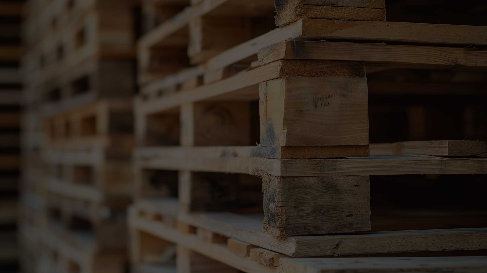

BALLYNAHINCH · NORTHERN IRELAND
Keep goods moving.
Put pallets to work.
Pallet supply, buying and collection, alongside light and heavy haulage throughout Ireland and the UK.

WHAT WE DO
Pallets, collections
and the journey ahead.
Buy pallets
New and reconditioned pallets for your business.
Sell and recycle pallets
Turn surplus pallets into usable stock.
Pallet collars
New and used collars for secure storage.
Pallet furniture
Seating and furniture made from timber pallets.
Haulage
Commercial transport across Ireland and the UK.
Pallets · Recycling · Haulage
A practical link
in your supply chain.
A family business founded by John and Caroline McKay in 1997. From its Ballynahinch facility, Spa Pallet Services supports businesses with pallet supply, collection, refurbishment and recycling, alongside haulage across Ireland and the UK.
About the business ↗A CLOSER LOOK
Built around movement.


GOOD TO KNOW
A clearer
starting point.
How do I begin?
Call 028 9756 3990 or prepare an enquiry on the contact page. Outline your location, requirements and intended timing.
How do I get a quotation?
Please contact the business directly for a quotation. Current pricing, availability and scope need to be confirmed by the team.